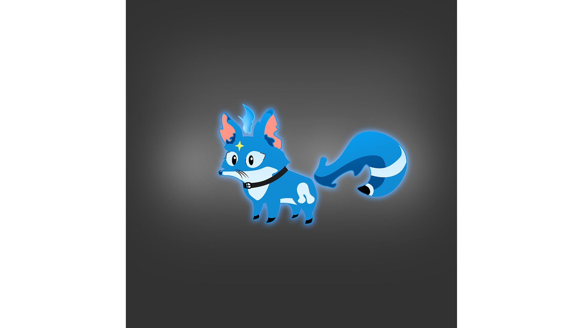

Meu nome é Willian Massao Nishimura, tenho 18 anos, sou um grande fã de jogos, gosto de estar envolvido no mundo "gamer". Atualmente estou desenvolvendo meu próprio jogo com outros dois amigos que me ajudam na parte de design no jogo.
Estou desenvolvendo esse jogo com meus amigos porque desde criança sou apaixonado por jogos e criar meu próprio jogo sempre foi algo que ficava na minha mente, mas eu não fazia ideia de como fazer isso então graças a um primo meu fiquei sabendo de um curso, e aqui estou eu, criando meu próprio jogo com meus amigos.
O nosso objetivo não é ficar famoso, ganhar dinheiro, nem nada do tipo, fazemos isso por amor a comunidade gamer e se um dia ficarmos famosos não vai ser apenas nós os beneficiados porque isso vai agregar nas indústrias de jogos eletrônicos no Brasil que sabemos que é bem pequena para quantidade de pessoas que jogam esses jogos.
Educação:
Ensino fundamental completo/ Cursando Ensino médio;
Executando curso de desenvolvimento de jogos;
curso básico de programação de site em HTML e CSS.
Curso de inglês avançado;
Habilidades em:
Sistema operacional Windows;
Softwares para:
-Programação de site: Visual studio code, e sites como codepen e github;
-Desenvolvimento de jogos: Adobe Photoshop, Substance Painter, Zbursh, Autodesk Maya e Unreal Engine.
Jessie uma das irmãs de Amon some, vasculhando o quarto dela ele acha seu diário e descobre coisas horríveis sobre a infância dela,
e então começa a suspeitar que sua irmã foi sequestrada e pensa que algo pior possa ter acontecido com ela.
Porém, ele ainda tem esperanças que ela ainda possa estar bem, e inicia uma jornada sem fim atrás de sua irmã em busca de respostas.
Cloe a outra irmã de Amon havia falecido há alguns meses e desde então acompanha Amon como uma raposa em memória ao seu animal favorito.
Concept art do presonagem principal (Amon).Concept art da Jessie (irmã do Amon e Cloe).

Concept art da Cloe (irmã do Amon e Jessie).Concept art do inimigo 1.Concept art do inimigo 2.Concept art do inimigo 3.Bioma 1.Bioma 2.